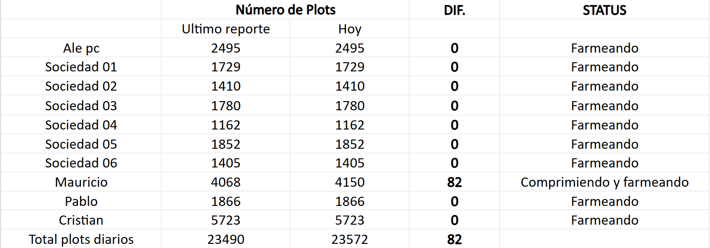

Cristank Via BTC


Ale Via BTC

Kaspa Cristank

Kaspa Cris & Cony

Chia Plotting
Total Chia: 181

Prueba Arranque Automático VDF:
Prueba Arranque Automático VDF 2:
Mi itinerario de hoy
Hoy me dediqué a terminar los trabajos de automatización de los VDF (Variadores de frecuencia). Además he estado estudiando la forma de automatizar el encendido automático de los computadores CHIA, de tal manera que cuando vuelva la electricidad después de un corte, éstos se enciendan automáticamente una vez vuelva la energía eléctrica.
Además de esto crearé un script para que CHIA se abra automaticamente una vez vuelva la luz, de esa forma estará siempre farmeando. Hay 3 mineros de Ale que estoy revisando ya que no están minando como sale reflejado en los pantallazos de VIA BTC. Hoy no hay actualización del aseo ya que lo haré durante la noche, en el próximo reporte subiré los videos con la evidencia (objetivos: oficina, túnel host, entrada host, cocina)